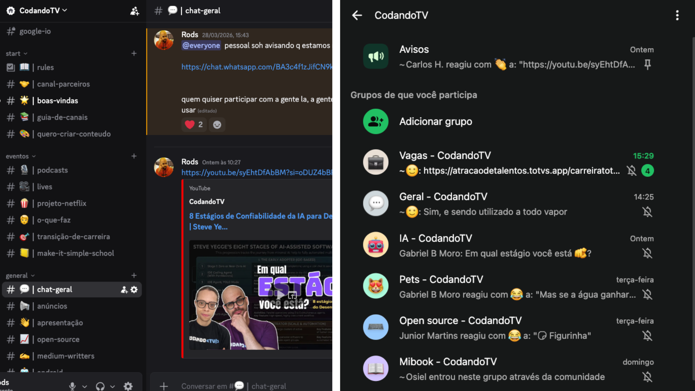
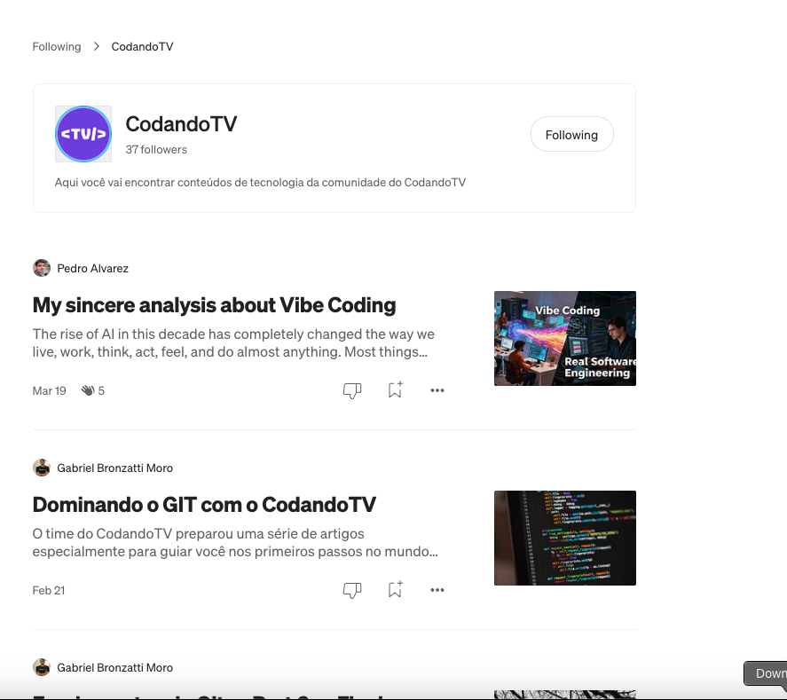

É um espaço para aprender, compartilhar conhecimento e construir projetos com a comunidade através de conteúdo técnico, vídeos de opinião, podcasts, mentorias e open source.
Conheça nosso canal no YouTube Inscreva-se no canalO CodandoTV nasceu como um espaço aberto para aprender, compartilhar conhecimento e criar junto com a comunidade. Nunca foi só sobre programação. A ideia sempre foi também trocar experiências sobre tecnologia, carreira e a vivência real de quem trabalha na área.
Aqui você vai encontrar conteúdo técnico, vídeos de opinião, reacts, podcasts com convidados e mentorias. O canal cresce junto com a comunidade, acompanhando assuntos que geram valor, conversa e aprendizado de verdade.
Além disso, o CodandoTV também tem projetos open source no GitHub, criados para que mais pessoas possam usar, estudar e contribuir. O objetivo é construir coisas úteis para a comunidade de forma aberta e colaborativa.
Conheça as pessoas por trás dos conteúdos e iniciativas do CodandoTV.
Projetos open source, ferramentas e iniciativas criadas para e pela comunidade dev. Ver tudo no GitHub →
Um framework para implementar Server-Driven UI de forma rápida e simples em Android, iOS, Flutter e KMP. Permite que as interfaces sejam controladas pelo servidor, tornando as atualizações mais ágeis e sem necessidade de publicar uma nova versão do app.
Além do YouTube, a comunidade vive em vários lugares. Escolha o canal que faz mais sentido pra você.

